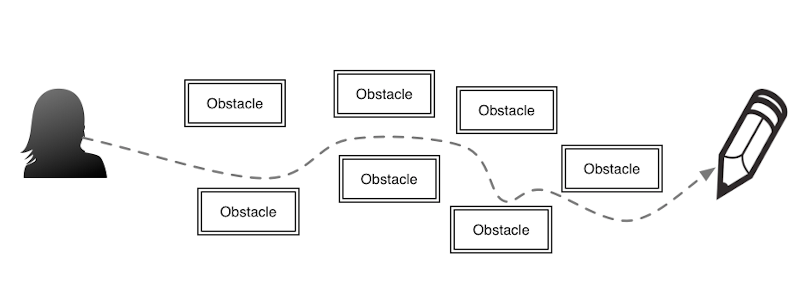
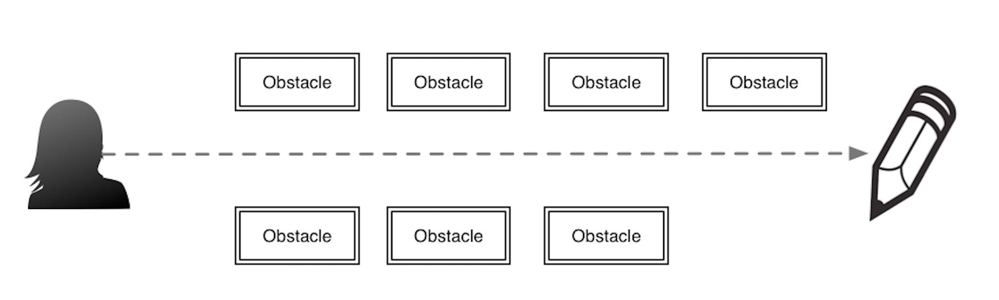

Despliegue continuo de sistemas de software
Principios Lean
Ahora nos adentraremos al tema de Principios Lean, que nos van a ser útiles para el desarrollo y despliegue de software en general.
Por qué son importantes?
Primero, los principios Lean vienen de los rubros de fabricación de automóviles y líneas de ensamblaje, espececíficamente de Toyota, estos principios han sido aplicados al área de construcción de software de forma exitosa en la última década. Entre los fabricantes de software que utilizan principios Lean para desarrollo de software, tenemos:
- Toyota (obviamente)
- 3M
- IBM
- Eclipse foundation
Segundo, nos provee una visión diferente a los métodos usuales de desarrollo de software, y al tener un punto de vista diferente nos brinda una colección diferente de herramientas para analizar y construir sistemas de software en ambientes variados. Tercero, se enfoca en el trabajo en equipo, en valorizar más el trabajo en equipo que las diferentes formas de administración y control que suelen encontrarse en los diferentes ambientes de trabajo.
Si hacemos una comparación entre las metodologías de desarrollo actuales, tenemos la aproximación normal:
En el gráfico apreciamos que la forma de trabajo está orientada a esquivar los problemas y obstáculos a medida que se presenten, podemos tomarla como una forma de trabajo reactiva donde los problemas y sus soluciones se van descubriendo a medida que se avanza en el proyecto.
En este diagrama, podemos observar la forma de trabajo Lean y sus principales diferencias. Lean se inicia con la identificación y eliminación de problemas antes de iniciar el trabajo, reduciendo de esta forma el trabajo perdido y el coste relacionado al mismo, en base a esta forma de trabajo, Lean es una aproximación proactiva.
Eliminar desperdicios
Este principio indica que debemos eliminar los desperdicios en los procesos y artefactos de desarrollo de software, pero como paso necesario para remover el desperdicio debemos primero identificarlo. El proceso de identificación de desperdicio en el desarrollo de software no se limita al proceso de codificación, sino también a todas las actividades relacionadas a la construcción de software. Algunos de los ejemplos miscelaneos de desperdicio:
- Reuniones o llamadas diarias innecesarias o que podrían reemplazarse con un correo electrónico o informe
- Archivos obsoletos de log en un sistema
- Errores de seguridad antiguos
- Dependencias de software obsoletas
Amplificar aprendizaje
Indica que debemos empoderar a los desarrolladores, a los usuarios finales y a los administradores a un flujo de trabajo de aprendizaje continuo. Este principio indica que todas las partes involucradas en el desarrollo de un sistema deben involucrarse como si el ambiente de trabajo fuese un ambiente de aprendizaje, como un aula, donde todos colaboramos y aprendemos de ambos ambientes de trabajo.
Retrasar decisiones
En este principio, se indica que debemos tomar las decisiones de diseño de un sistema de software lo más tarde posible. El objetivo de este principio es reducir las posibles dependencias explícitas e implícitas envueltas en una decisión de diseño. Y al tener estas decisiones retrasadas, nos orientamos a crear sistemas más flexibles, porque el punto de integración y espera de una decisión generará un esquema de diseño mas versátil.
Desplegar lo más rápido posible
El despliegue temprano y frecuente nos permite tener un ciclo de retroalimentación y trabajo mas corto, similar a un ambiente de experimentación. Con un ambiente de experimentación con ciclos cortos y retroalimentación temprana podemos crear sistemas más consistentes y correctos. Este principio fué la punta de lanza de Lean en el ámbito de desarrollo y permitió la adopción gradual de los demás principios.
Licensed under the Creative Commons Attribution Share Alike License 4.0